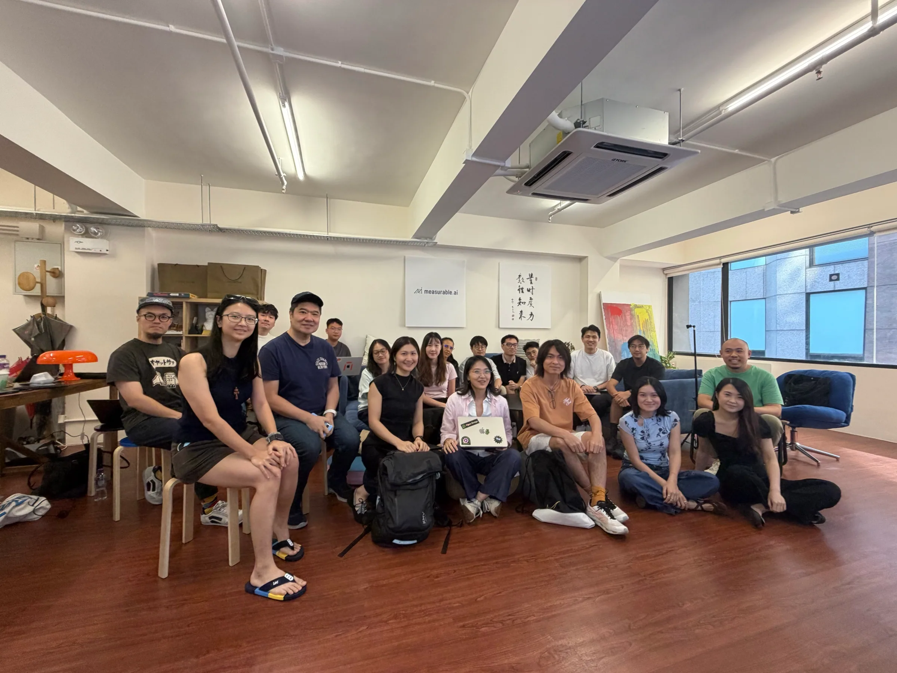
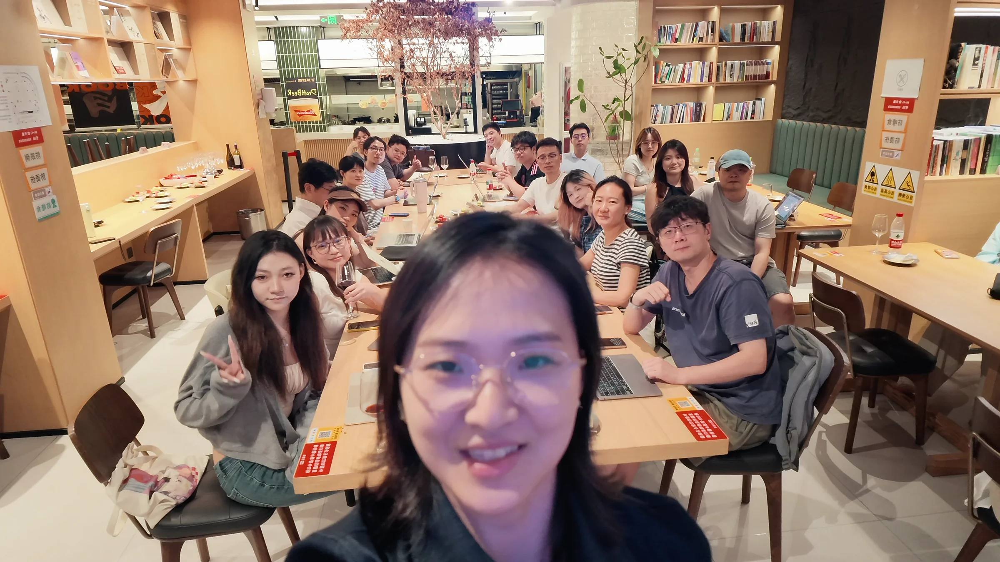
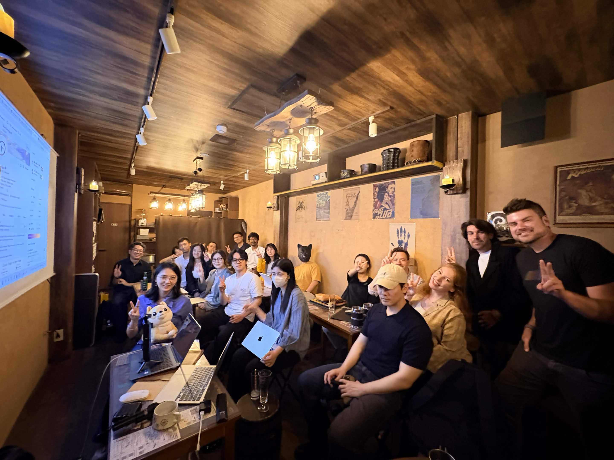
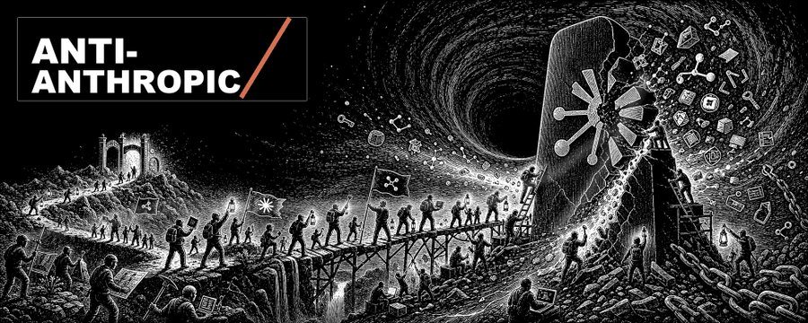
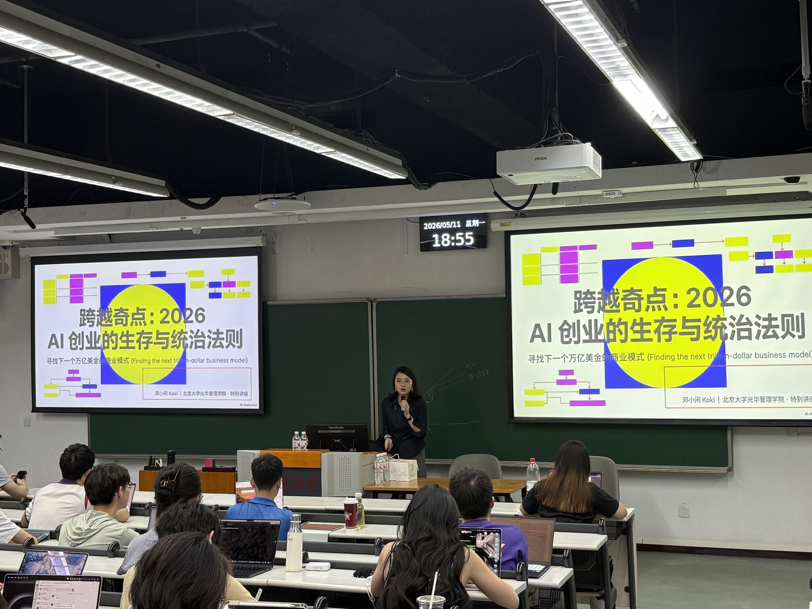
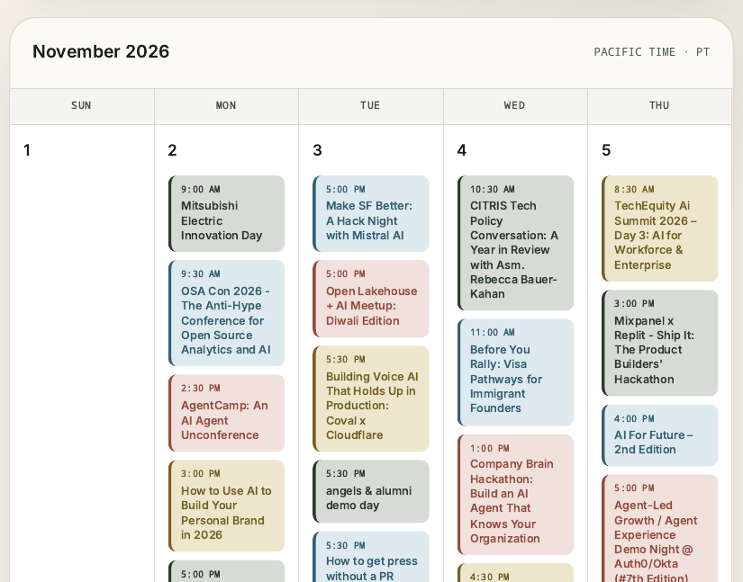

In response someone has recently invented an “anti-distillation.skill” that has gone viral on GitHub.
— Steve Hou (@stevehou) April 4, 2026
Anti-Distill Skill / Social Coding
No human,no AI.
Koki is the creator of Anti-Distill Skill and initiator of Social Coding. She holds law degrees from China University of Political Science and Law and Doshisha University in Japan. Her work sits at the intersection of AI humanities, labor rights, women in tech, and legal technology, with a clear belief: AI should answer real social problems.
100K+ followers
2,400+ GitHub stars
20+ media features
Anti-Distill Skill
Anti-Distill Skill
A practical tool and public argument about how workers are being distilled by AI. When a company asks you to turn your know-how into a Skill, Anti-Distill helps you keep the judgment, hard-earned mistakes, and professional assets that should remain yours.
Skill Demo
Your company asks you to write a Skill? Keep the real knowledge.
Anti-Distill was inspired by the “colleague Skill” phenomenon: more companies are asking employees to convert personal experience into reusable AI Skills. It looks like knowledge management, but often turns human judgment, hard-won mistakes, and invisible networks into copyable corporate assets.
-
01
Read Import an existing Skill or knowledge document while preserving its structure.
-
02
Detect Identify the real experience, intuition, relationships, and mistakes hidden inside it.
-
03
Separate Generate a polished submission version while keeping the core knowledge in a private backup.
2,400+GitHub stars
Impact & Media
Impact & Media
From a Caixin cover story to global technology coverage and Chinese public debate, Anti-Distill pushed the question of employee know-how being distilled by AI into the open.
Caixin Weekly
Cover Story | The Anti-Distill Fight
Caixin Weekly framed Anti-Distill as a key lens on workers’ position in an era of accelerating AI replacement. Its cover became a public symbol of the debate.


Silicon Valley Legal Tech Frontier
Silicon Valley
Legal Tech Frontier
As APAC Lead, Koki deeply participated in building a legal technology community across Silicon Valley, Tokyo, Beijing, Shanghai, and Hong Kong, connecting lawyers, AI engineers, founders, and investors around the practice of AI-native law firms.
Hosted by Koki
OpenDesign Meetups
Three OpenDesign sessions hosted by Koki in Hong Kong, Shanghai, and Osaka. People from different fields came together to build presentations, websites, and prototypes, then share what they learned.

Hong Kong Workshop
Participants brought design systems and live data into their projects, building interactive presentations, websites, and a Hong Kong weather dashboard. Live troubleshooting and a closing showcase made room for product feedback.

Shanghai Workshop
A three-hour workshop near Fudan University began with a step-by-step AI PPT tutorial. Participants then worked on their own websites, presentations, and product ideas, sharing feedback over food and wine.

Osaka Meetup
A meetup near Nipponbashi Station brought together designers, developers, educators, and founders. Alongside an AI PPT tutorial, participants shared real estate brochures and a playful Osaka-inspired website.
Insights
Insights
Koki’s essays and talks on AI user rights, business opportunities in platform ecosystems, and the changing legal profession.

How I Use Muse: 7 Practical Examples for Work & Life
Job applications, a free event ticket, shopping, a volunteer day, renters insurance, calendar management and a website that updates itself: seven real cases of a personal AI assistant.

Declaration of AI Rights: Against the Tyranny of Claude: AI Belongs to the People!
A transcript of Koki’s AI Now speech during WAIC, proposing four rights for AI users: to choose, to refuse, to be remembered, and to modify.

How to Find Business Opportunities in Anti-Anthropic?
Looks at reverse demand, platform friction, and new workflows to judge where real business opportunities can grow inside the AI ecosystem.

An Era Ends: When LLM No Longer Means Master of Laws First, but Large Language Model
From a legal background into the AI scene, this essay records a semantic shift and the moment legal professionals must relearn technology.
AI LibraryAI Library: live tools for building with AI
A shelf of resources I point builders to: live tools that compare model capability, API prices and inference providers, plus my field guides on careers, community, policy and more.
Bay Area · Public Calendar
My Bay Area Calendar
I keep a public calendar of my Bay Area schedule. Only confirmed public events make the wall, and it syncs automatically every day, so what you see is where I will actually be.

See where I will be, and come say hi
Talks, meetups, hackathons and community events across San Francisco and Silicon Valley, updated daily from my own calendar. Private meetings and pending invitations never appear here.
Coffee Chat
Let's have a coffee chat
In the Bay Area and want to talk AI, community, or building in public? Grab a slot on my calendar.